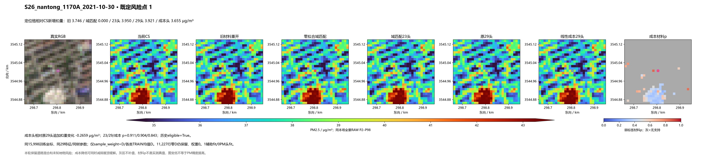
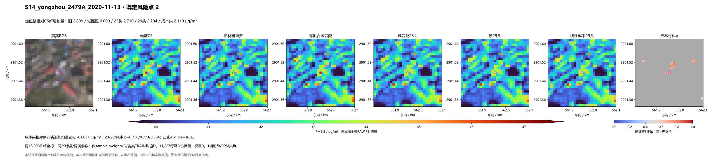
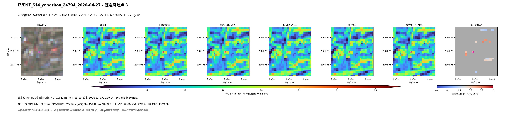
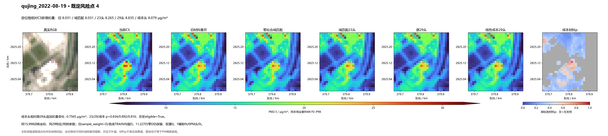
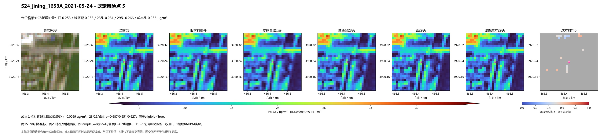
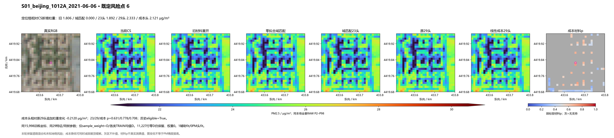
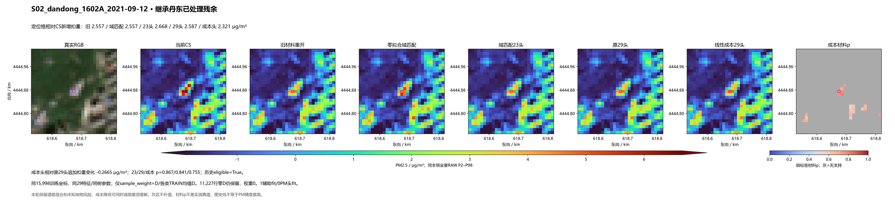
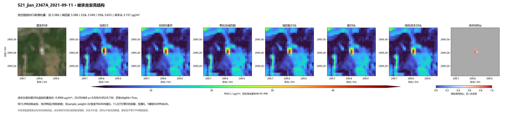

同15,998坐标、同29特征，仅改线性样本成本。206场实际推理，1次辅助材料fit，0次PM头fit。成本约束减少部分道路追加降低，也损失部分小亮缓解；没有全面胜过零拟合域匹配。
结论与代价 · 固定合同 · 五方法同支持对比 · 弱标签材料指标 · 原30坐标核定 · 真实日期对
成本头相对原29头的定位格追加扣量变化 -0.2659 μg/m³。负值为减少扣量，不能一概视为改善。

成本头相对原29头的定位格追加扣量变化 -0.6837 μg/m³。负值为减少扣量，不能一概视为改善。

成本头相对原29头的定位格追加扣量变化 -0.0512 μg/m³。负值为减少扣量，不能一概视为改善。

成本头相对原29头的定位格追加扣量变化 -0.7565 μg/m³。负值为减少扣量，不能一概视为改善。

成本头相对原29头的定位格追加扣量变化 -0.0099 μg/m³。负值为减少扣量，不能一概视为改善。

成本头相对原29头的定位格追加扣量变化 -0.2120 μg/m³。负值为减少扣量，不能一概视为改善。

成本头相对原29头的定位格追加扣量变化 -0.2665 μg/m³。负值为减少扣量，不能一概视为改善。

成本头相对原29头的定位格追加扣量变化 -0.4964 μg/m³。负值为减少扣量，不能一概视为改善。
